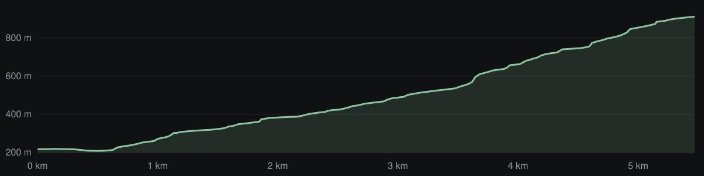
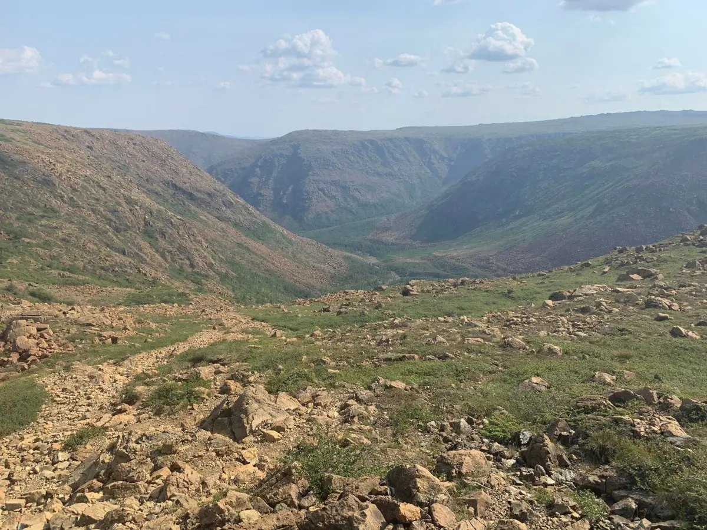

Mont Albert, the bare plateau of Gaspésie
Last updated: November 21, 2026
A steady climb from the Gîte du Mont-Albert to a vast, treeless plateau of serpentine rock, where the caribou of Gaspésie live above the forest. One of the great hikes of Québec.

- Distance
- 11.6 km return by the north side, or a 17.3 km loop
- Elevation gain
- About 860 m
- Time
- About 5 h return, 6 to 8 h for the loop
- Difficulty
- Difficult
- Start
- Gîte du Mont-Albert, on Route 299
- Season
- The north side opens only part of the summer, to protect the caribou
Map

Elevation profile

The trail
From the Gîte du Mont-Albert, the trail crosses the Sainte-Anne River and climbs through the forest on the north side. The slope is steady from start to finish: there is little flat ground before the treeline.
Then the forest gives way to the plateau, around 13 square kilometres of bare, ochre serpentine rock, with the summit shelter and a wide view over the Chic-Chocs. On a clear day it feels like the far north, a few hours from the sea.
Come back the same way, or continue on the loop: it crosses the plateau, comes down the south side and returns along the river, for about 17.3 km in all.
Good to know
- Caribou first. The plateau is home to the last caribou herd south of the St. Lawrence. Stay on the trail, keep your distance, and respect closures.
- Weather changes fast. Even in July, the plateau can be cold, windy and foggy. Bring layers, a windbreaker and water.
- Start early. Give yourself time to enjoy the summit and come down before the end of the day.
- Park access. An entry fee applies in Québec national parks. Check opening dates and trail conditions on sepaq.com.
Photos



Keep the day with Arpente
Tap record at the start and put your iPhone in your pocket. Arpente draws your route and measures the distance, time and elevation gain, even with the screen off. Add a photo and a note, and the outing stays in your journal. Discover Arpente.
Other outings
 Acropole des DraveursAbout 10.4 km return to the first summit, 11.2 km to the third
Acropole des DraveursAbout 10.4 km return to the first summit, 11.2 km to the third Sentier de la StatueAbout 7.6 km return, or 3.6 km return to the Bellevue lookout
Sentier de la StatueAbout 7.6 km return, or 3.6 km return to the Bellevue lookout Lachine Canal14.5 km one way, from the Old Port to Lachine
Lachine Canal14.5 km one way, from the Old Port to Lachine Mount RoyalAbout 1.4 km from the top of rue Peel to the lookout, about 2 km to the cross
Mount RoyalAbout 1.4 km from the top of rue Peel to the lookout, about 2 km to the cross
The route on the map is indicative, computed with BRouter on OpenStreetMap data (© OpenStreetMap contributors, ODbL); elevations from SRTM. It doesn’t replace the park’s official map. Distances, elevation and times in the table come from park sources: check conditions before you go.